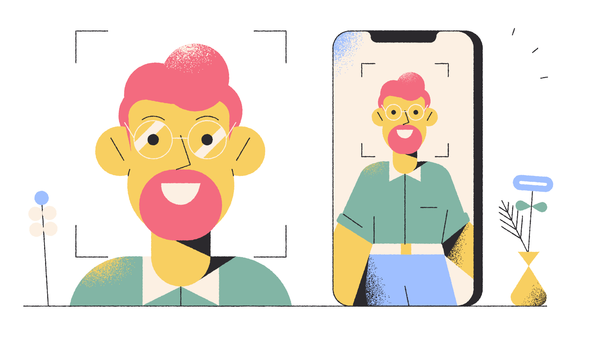

{% extends "base.html" %}

{% block css %}
<!-- Basic Uppy styles -->
<link href="https://transloadit.edgly.net/releases/uppy/v1.16.1/uppy.min.css" rel="stylesheet">
{{ block.super }}
<link href="//transloadit.edgly.net/releases/uppy/robodog/v1.6.4/robodog.min.css" rel="stylesheet">
{% endblock css %}

{% block content %}
<<<<<<< HEAD
  <p>Welcome to</p>
  <div class="d-flex col-md-6 justify-content-center align-items-center">
    <button id='browse'>Upload</button>
  </div>
  <p>
  <div class="d-flex col-md-6 justify-content-center align-items-center">
    <small>Please upload your content here</small>
  </div>
  </p>
=======


    <div class="container">
      <div class="row justify-content-around align-items-center">
        <div class="col-8 col-md-7 col-lg-6 order-md-2 mb-5 mb-md-0">
          
        </div>
        <!--end of col-->
        <div class="col-12 col-md-6 col-lg-5 order-md-1">
          <h1 class="display-4">Measure User Satisfaction</h1>
          <span class="lead">
            A robust way to score the experience of your customers, one video
            at a time.
          </span>
          <div class="mb-4">
            <span class="text-muted text-small">Get started by trying a demo.</span>
          </div>
          <button id='browse' class="btn btn-primary btn-lg">Get started now</button>
          <a href="{% url 'about' %}" class="btn btn-link btn-lg"><i class="icon-controller-play">&nbsp;</i>Why Tiny Door</a>
        </div>
        <!--end of col-->
      </div>
      <!--end of row-->
    </div>
    <!--end of container-->
  <!--end of section-->
>>>>>>> c7b73082a79eef302b7168ff3e80dc3c2293398b
{% endblock content %}

{% block javascript %}
{{ block.super }}
<!-- This pulls Uppy from our CDN. Alternatively use `npm i @uppy/robodog --save` -->
<!-- if you want smaller self-hosted bundles and/or to use modern JavaScript -->
<script src="//transloadit.edgly.net/releases/uppy/robodog/v1.6.4/robodog.min.js"></script>
<script src="https://ajax.googleapis.com/ajax/libs/jquery/3.5.1/jquery.min.js"></script>
<script src="https://transloadit.edgly.net/releases/uppy/v1.16.1/uppy.min.js"></script>
<script>

document.getElementById('browse').addEventListener('click', function () {
  var uppy = window.Robodog.pick({
    providers: [ 'instagram', 'url', 'webcam', 'dropbox', 'google-drive', 'facebook', 'onedrive' ],
    waitForEncoding: true,
    params: {
      // To avoid tampering, use Signature Authentication
      auth: { key: '20ff383b0b2b49a79643d1874edf5a3f' },
      template_id: '85def6ad6f4b437182fb715cdd45977f'
    }
  }).then(function (bundle) {
    // Due to `waitForEncoding: true` this is fired after encoding is done.
    // Alternatively, set `waitForEncoding` to `false` and provide a `notify_url`
    // for Async Mode where your back-end receives the encoding results
    // so that your user can be on their way as soon as the upload completes.
    console.log(bundle.transloadit) // Array of Assembly Statuses
    console.log(bundle.results)     // Array of all encoding results

    startWatching(bundle.results[0].ssl_url);
  }).catch(console.error)
})

function startWatching(furl) {
    $.ajax({
        type: "POST",
        url: "/",
        data: {
            file_url: furl,
            csrfmiddlewaretoken: "{{ csrf_token }}",
        },
        success: function(data) {
            // Once the task is started, redirect to results page
            window.location.href += data.task_id;
        }
    });
}
</script>
{% endblock javascript %}
